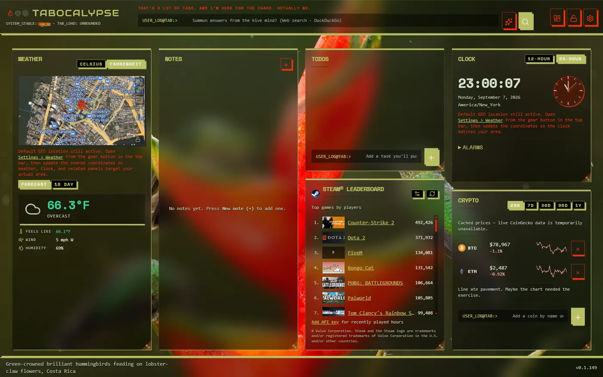
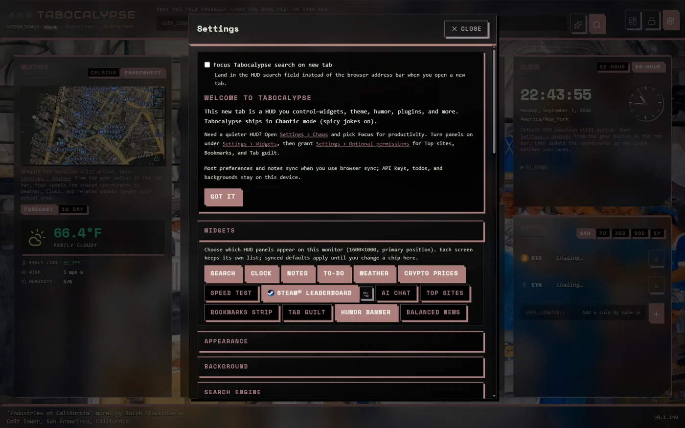
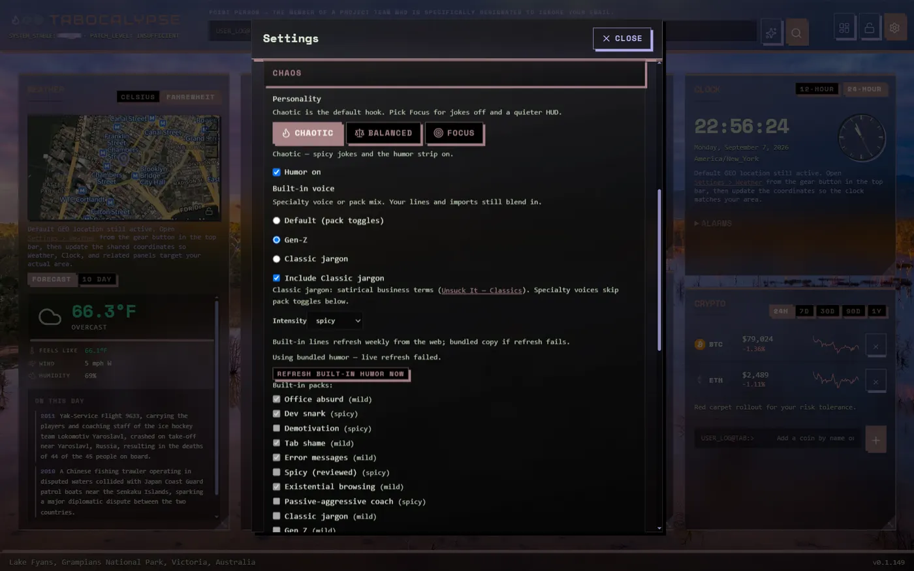
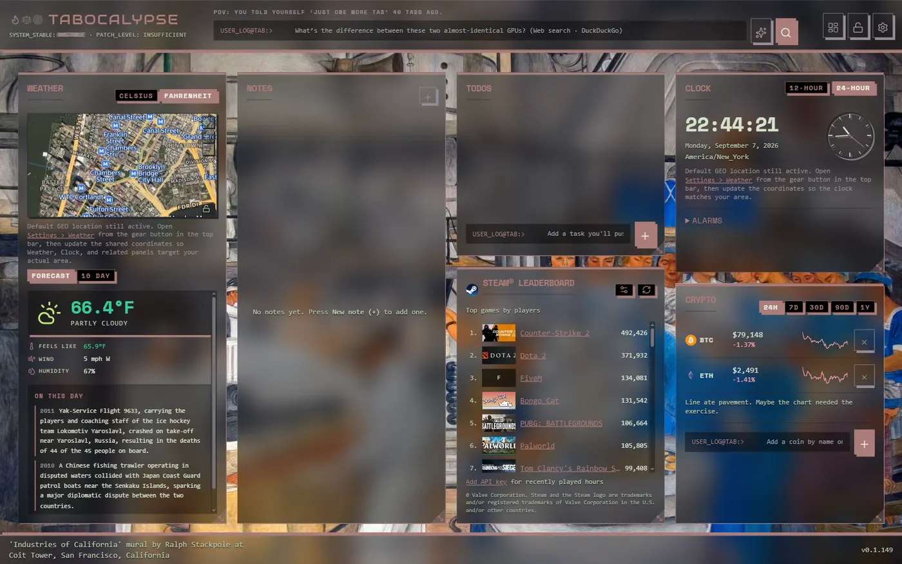

Unreleased — build it yourself, no store listing yet
Tabocalypse is a cross-browser new-tab HUD: search, clock, weather, notes, to-dos, crypto prices, an optional Steam® leaderboard, a speed test, and a personality dial that ranges from quiet and useful to actively judging your open tabs. Chrome, Edge, Firefox, and Safari.

Real screenshot. Not a mockup. Yes, the tagline at the top really does mock you like that.
A simplified mockup of the real Settings > Appearance, Chaos, and Widgets controls — the same 10 accent palettes and 3 control shapes shipped in the extension, wired to fake data so you can feel how it changes before you build it.
Personality
Accent palette
Control shape
Widgets
Search
USER_LOG@TAB:> ___
Clock
00:00:00
Weather
66°F Partly cloudy
(demo data)
To-do
☐ Reply to that email (2 days late)
Crypto
BTC $79,xxx (demo data)
Notes
No notes yet.
Mockup, not the real extension — colors and shapes match; search, weather, and crypto data do not.
Toggle any panel per monitor. Nothing is forced on except the ones that make a new tab a new tab. (Real Settings screenshot below — try the fake version above.)

Three personality settings — Chaotic, Balanced, and Focus — control the humor strip and clock roasts (try them in the demo above). Pick a built-in voice (default pack mix, Gen-Z, or classic corporate jargon), mix in built-in packs by mildness, or write your own lines. Turn it off entirely and Tabocalypse is just a fast, quiet HUD.

Dark or Light base mode, 10 built-in accent palettes plus a fully custom picker, and Sharp, Soft corners, or Pill control shapes — all of it live in the demo above. Turn on Auto HUD and Tabocalypse samples accent colors straight from today's background photo instead, running the same contrast-safety pass it uses for manual palettes so text stays readable either way.

No publisher backend
No AlienFacepalm account, sync server, or telemetry. Network calls are user-directed — weather, your chosen search engine, optional widgets you turn on.
BYO AI, always
The optional AI chat widget and search assist handoff use your own API key or open a third-party site in a new tab. No publisher API keys are ever shipped.
Declarative plugins only
Imported packs and plugins are JSON, validated against a schema. No eval,
no user-supplied JavaScript, no remote code execution.
Local-first storage
Settings, notes, todos, imported packs, and API keys stay on your device. Only what you enable in browser sync leaves this computer — and that's Mozilla/Google/Microsoft/Apple's sync, not ours.
Tabocalypse isn't on the Chrome, Edge, Firefox, or Safari extension stores yet. Until it is, run it from source or load a build someone shares with you. A direct extension-store download link lands here once that changes.
1. Clone + build
git clone git@github.com:alienfacepalm/tabocalypse.git
cd tabocalypse
pnpm install
pnpm build2. Load unpacked
Open your browser's extensions page, enable developer mode, and load
apps/extension/output/chrome_edge-mv3.
3. Open a new tab
That's it. Settings live behind the gear icon, top right. Everything ships in Chaotic mode by default.
Chrome / Microsoft Edge (MV3)
chrome://extensions (or edge://extensions).apps/extension/output/chrome_edge-mv3 —
the folder containing manifest.json.
Firefox
about:debugging#/runtime/this-firefox.apps/extension/output/firefox-mv2/manifest.json.
Temporary add-ons don't persist across Firefox restarts — reload after each restart.
Safari (macOS)
Safari has no "Load unpacked" flow. On macOS with Xcode installed, convert the built bundle:
xcrun safari-web-extension-converter \
apps/extension/output/safari-mv3Then open the generated Xcode project and Run it to load the extension into Safari.
Hot-reload while developing
pnpm dev # Chrome target
pnpm dev:firefoxReload the installed extension after changes, then open a fresh new tab.